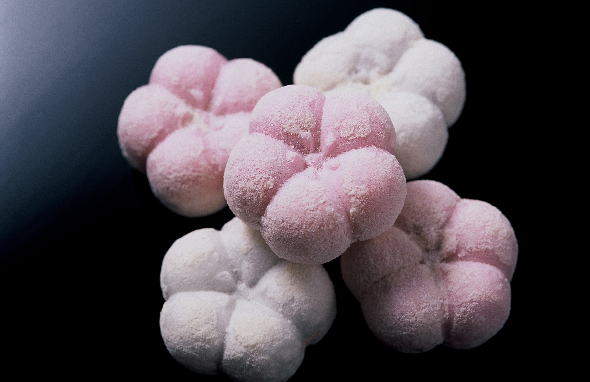

Japão
Tradição e Tecnologia em Harmonia
Um País de Contrastes Fascinantes
O Japão é uma terra onde o antigo e o moderno coexistem de maneira única. De templos milenares a cidades futuristas, o país oferece uma experiência rica em cultura, história e inovação. Cada região do Japão tem algo especial para explorar, tornando-o um destino inesquecível.
Principais Atrações

Tóquio - A Metrópole Vibrante
A capital do Japão é um centro de tecnologia, moda e entretenimento. Descubra bairros icônicos como Shibuya, Akihabara e Harajuku, além de belos parques como o Ueno.
Quioto - O Coração Cultural
Repleta de templos e santuários históricos, Quioto é o lugar perfeito para vivenciar a cultura tradicional japonesa. Não perca o Templo Kinkaku-ji (Pavilhão Dourado) e o bairro de Gion, famoso pelas gueixas.

Monte Fuji - O Símbolo do Japão
Este icônico vulcão é uma das montanhas mais fotografadas do mundo. Os arredores oferecem trilhas, lagos e vistas espetaculares, especialmente na primavera, durante a floração das cerejeiras.
Gastronomia Japonesa
A culinária japonesa é uma arte que combina sabor, estética e tradição:
- Sushi e Sashimi:
O Japão é o lar dessas delícias frescas e refinadas.

- Ramen:
Um prato de macarrão em caldo quente, com variações regionais.

- Tempura:
Legumes e frutos do mar empanados e fritos.

- Matcha:
Chá verde em pó usado em bebidas e sobremesas.

- Doces Wagashi:
Sobremesas tradicionais feitas para acompanhar o chá.

Melhor Época para Visitar
- Primavera (Março a Maio):
A época das cerejeiras em flor (sakura) é mágica.
- Outono (Setembro a Novembro):
As folhas vermelhas (momiji) criam paisagens incríveis.
- Inverno (Dezembro a Fevereiro):
Ideal para esqui e festivais de neve em Hokkaido.
- Verão (Junho a Agosto):
Festivais animados e campos de flores, mas prepare-se para o calor e a umidade.
Curiosidades
O Japão tem mais de 6.800 ilhas, mas as quatro principais (Honshu, Hokkaido, Kyushu e Shikoku) concentram a maior parte da população.
Tóquio é a maior área metropolitana do mundo, com mais de 37 milhões de habitantes.
O shinkansen, trem-bala japonês, pode atingir velocidades de até 320 km/h.
Dicas
- Respeite as Regras Locais:
O Japão é conhecido por sua ordem e etiqueta. Sempre siga as regras, especialmente em transportes públicos e templos.
- Compre o Japan Rail Pass:
Uma ótima maneira de economizar no transporte entre cidades.
- Experimente as Casas de Chá:
Vivencie a tradição japonesa de forma autêntica.
- Explore a culinária:
Visite os mercados locais, como o Tsukiji em Tóquio, para experimentar a autêntica culinária japonesa.